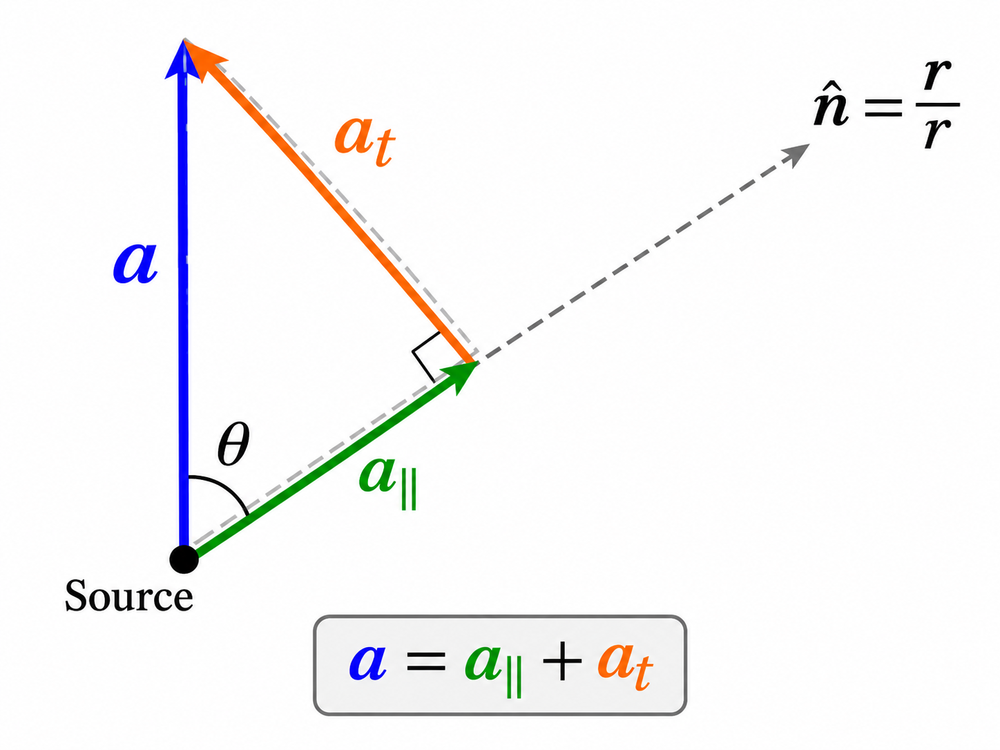

전자파 복사 (1)
0. Introduction
이 글에서는 \(e^{-i\omega t}\) 형태의 time convention 을 사용한다.
이 글에서는 Heaviside–Lorentz units 을 사용한다.
이 포스트에서는 전자파 복사의 기본원리와 우리가 알고있는 전자파 복사의 엄밀한 수학적 유도를 다루겠다.
또한, 비 상대론적 전자파 복사에 대한 내용을 다루고 추후에 상대론적 전자파 복사에 대한 내용을 다루겠다.
1. Governing equations in inhomogeneous wave equation
Heaviside–Lorentz units 헤비사이드–로런츠 단위계는 전자기학에서 사용되는 단위계 중 하나로, 전자파의 전자기장을 표현할때 절대적 물리량인 빛으로 표현해 수학적으로 매우 간단히 기술할수 있다.
헤비사이드–로런츠 단위계를 적용한 맥스웰 방정식은 다음과 같다.
\[ \nabla\cdot\mathbf E=\rho,\quad \nabla\cdot\mathbf B=0,\quad \nabla\times\mathbf{E}=-\frac{1}{c}\partial_{t}\mathbf{B},\quad \nabla\times\mathbf{B}=\frac{\mathbf{J}}{c} + \frac{1}{c}\partial_{t}\mathbf{E} \tag{1}\]
Inhomogeneous wave equation 에서
\[ \left(\frac{1}{c^2}\partial_t^2-\nabla^2\right)\mathbf{E} =-\frac{1}{c^2}\partial_t\mathbf{J}-\nabla\rho, \quad \partial_t\rho + \nabla\cdot\mathbf{J}=0 \tag{2}\]
여기서 \(\rho\) 와 \(\mathbf{J}\) 는 각각 전하 밀도와 전류 밀도이고 주어지는 값이고 \(\mathbf{E}\) 와 \(\mathbf{B}\) 는 우리가 구해야할 값이고 맥스웰 방정식에 따라 \(\mathbf{E}\) 를 구하면 \(\mathbf{B}\)는 자동결정 된다.
식 2를 푸리에 변환 하면.
\[ (-\frac{\omega^2}{c^2}+k^2)\mathbf{E}=\frac{i\omega}{c^2}\mathbf{J}-i\mathbf{k}\rho,\quad i\omega\rho-i\mathbf{k}\cdot\mathbf{J}=0 \tag{3}\]
연속 방정식이 계속 따라다니는 이유는 추후 운동량 포스트에서 정리하겠지만. 맥스웰 방정식을 검산 하는 좋은 수단이 될 수 있다.
식 3를 필드와 소스 term 을 묶어서 나머지를 연산자 취급하게 되면 일반해와 특수해를 구하는 비제차 미분방정식을 푸는 셈이 된다.
c : complementary solution, p : particular solution
\[ (-\frac{\omega^2}{c^2}+k^2)\mathbf{E}_c=0,\quad (-\frac{\omega^2}{c^2}+k^2)\mathbf{E}_p=\frac{i\omega}{c^2}\mathbf{J}-i\mathbf{k}\rho,\quad \mathbf{E} = \mathbf{E}_c + \mathbf{E}_p \]
이때 \(\mathbf{B}\) 도 같은 맥락으로
\[ \nabla\times\mathbf{E}=-\frac{1}{c}\partial_{t}\mathbf{B}\rightarrow\mathbf{B}=\frac{c}{\omega}\mathbf{k}\times\mathbf{E},\;\;\text{and}\;\; \mathbf{B}=\mathbf{B_c} + \mathbf{B_p}=\frac{c}{\omega}\mathbf{k}\times\mathbf{E_c} + \frac{c}{\omega}\mathbf{k}\times\mathbf{E_p} \]
2. Electric field \(\mathbf{E}_p\)
\[ \mathbf{E}_p = \frac{i\frac{\omega}{c^2}\mathbf{J}-i\mathbf{k}\rho}{-\frac{\omega^2}{c^2}+k^2} \quad \text{\&} \quad \rho = \frac{\mathbf{k}\cdot\mathbf{J}}{\omega}\;\rightarrow\;\mathbf{E}_p = \frac{i\frac{\omega}{c^2}\mathbf{J}-i\frac{\mathbf{k}(\mathbf{k}\cdot\mathbf{J})}{\omega}}{-\frac{\omega^2}{c^2}+k^2}=\underbrace{-i\omega\frac{\mathbf{J}}{\omega^2-c^2k^2}}_{\mathbf{E}_{p1}} + \underbrace{i\omega\frac{c^2}{\omega^2}\frac{\mathbf{k}(\mathbf{k}\cdot\mathbf{J})}{\omega^2-c^2k^2}}_{\mathbf{E}_{p2}} \tag{4}\]
이때 \(\omega^2-c^2k^2=0\) 인 경우를 생각해보자 2개의 pole 점이 발생한다. 이때 직관을 믿으면 하나는 outgoing wave, 하나는 incoming wave 일것이다, 일단 이정도로만 의심하고 더욱 엄밀한 증명을 해보자.
점전하에 의해 발생하는 전류를 \(\mathbf{J(\mathbf{r},t)}=q\delta(\mathbf{r}-\mathbf{x}(t))\frac{dx(t)}{dt}\) 라고 하자. 추가로 점전하가 움직이는 경로의 자취를 따라 계산되므로 관측점이 어디에 있든지 상관없이 점전하가 움직이는 경로를 따라 계산되므로 상대론적으로도 맞는 표현이다.
하지만 비 상대론적 전자파 복사를 가정하므로 \(|\mathbf{x}(t)|\ll\lambda\) 인 상황으로 가정한다 (상대론적으로는 틀린 표현이지만 비상대론적으로는 유용한 표현이다)
따라서 점전하에 의해 발생하는 전류는 \(\mathbf{J(\mathbf{r},t)}=q\delta(\mathbf{r})v(t)\) 가 된다.
푸리에 변환하면, \[ \mathbf{J}(\mathbf{k},\omega) = \int d\mathbf{r}dt\mathbf{J}(\mathbf{r},t) e^{-i(\mathbf{k}\cdot\mathbf{r}-\omega t)} = \int dt qv(t)e^{i\omega t} = qv(\omega) \]
이제 특수해 소스 term \(\mathbf{E}_{p1}\) 에 대입하여 실공간 으로 푸리에 역변환 하면
\[ \mathbf{E}_{p1}(\mathbf{r},t) = -iq\int \frac{d\mathbf{k}d\omega}{(2\pi)^4} \frac{\omega v(\omega)e^{i(\mathbf{k}\cdot\mathbf{r}-\omega t)}}{\omega^2-c^2k^2} =\frac{iq}{c^2} \int \frac{d\omega}{2\pi}\omega v(\omega)e^{-i\omega t}\color{red}{\int \frac{d\mathbf{k}}{(2\pi)^3} \frac{e^{i\mathbf{k}\cdot\mathbf{r}}}{k^2-\frac{\omega^2}{c^2}}} \]
\[ d\mathbf{k} = k^2\sin\theta\,dk\,d\theta\,d\phi,\;\mathbf{k}\cdot\mathbf{r} = kr\cos\theta,\; \eta = \cos\theta \]
\[ {\color{red} \int \frac{d\mathbf{k}}{(2\pi)^3} \frac{e^{i\mathbf{k}\cdot\mathbf{r}}}{k^2-\frac{\omega^2}{c^2}} } = \frac{1}{(2\pi)^2}\int_0^\infty k^2dk \int_{-1}^{1}d\eta \frac{e^{ikr\eta}}{k^2-\frac{\omega^2}{c^2}} = \frac{1}{(2\pi)^2}\int_0^\infty dk\frac{k^2}{k^2-\frac{\omega^2}{c^2}}\frac{e^{ikr}-e^{-ikr}}{ikr} \]
먼저 지수함수의 두 항을 분리하면
\[ \begin{aligned} &\frac{1}{(2\pi)^2}\int_0^\infty dk\, \frac{k^2}{k^2-\frac{\omega^2}{c^2}} \frac{e^{ikr}-e^{-ikr}}{ikr}\\ &=\frac{1}{(2\pi)^2ir} \left[ \int_0^\infty dk\,\frac{ke^{ikr}}{k^2-\frac{\omega^2}{c^2}} - \int_0^\infty dk\,\frac{ke^{-ikr}}{k^2-\frac{\omega^2}{c^2}} \right]. \end{aligned} \]
두 번째 적분에서 \(k=-q\)로 치환한다. 이때 \(dk=-dq\)이며, 적분구간은 \(k:0\to\infty\)에서 \(q:0\to-\infty\)로 바뀐다.
\[ \begin{aligned} \int_0^\infty dk\,\frac{ke^{-ikr}}{k^2-\frac{\omega^2}{c^2}} &=\int_0^{-\infty}(-dq)\, \frac{(-q)e^{iqr}}{q^2-\frac{\omega^2}{c^2}}\\ &=\int_0^{-\infty}dq\, \frac{qe^{iqr}}{q^2-\frac{\omega^2}{c^2}}\\ &=-\int_{-\infty}^{0}dq\, \frac{qe^{iqr}}{q^2-\frac{\omega^2}{c^2}}. \end{aligned} \]
따라서 두 번째 적분 앞의 음수 부호가 상쇄된다. 적분변수 \(q\)를 다시 \(k\)로 표기하면
\[ \begin{aligned} &\frac{1}{(2\pi)^2ir} \left[ \int_0^\infty dk\,\frac{ke^{ikr}}{k^2-\frac{\omega^2}{c^2}} + \int_{-\infty}^{0}dk\,\frac{ke^{ikr}}{k^2-\frac{\omega^2}{c^2}} \right]\\ &=\frac{1}{(2\pi)^2ir} \int_{-\infty}^{\infty}dk\, \frac{ke^{ikr}}{k^2-\frac{\omega^2}{c^2}}\\ &=\frac{1}{(2\pi)^2ir} \int_{-\infty}^{\infty}dk\, \frac{ke^{ikr}} {\left(k-\frac{\omega}{c}\right)\left(k+\frac{\omega}{c}\right)}. \end{aligned} \]
\[ \frac{1}{(2\pi)^2ir} \int_{-\infty}^{\infty}dk\, \frac{ke^{ikr}} {\left(k-\frac{\omega}{c}\right)\left(k+\frac{\omega}{c}\right)}\rightarrow \frac{e^{i\omega r/c}}{4\pi r} \quad \text{(outgoing wave)}\quad \]
3. Residue theorem
앞에서 변수 치환을 통해 적분구간을 실수축 전체로 확장하였다. 이 형태에서는 복소평면에 폐곡선을 구성하여 유수정리(residue theorem)를 적용할 수 있다.
이제 \(k_0=\omega/c>0\), \(r=|\mathbf{r}|>0\)로 놓자. 계산할 공간 적분은 다음과 같다.
\[ \frac{1}{(2\pi)^2ir} \int_{-\infty}^{\infty}dk\, \frac{ke^{ikr}}{(k-k_0)(k+k_0)}. \]
다만 \(k=\pm k_0\)에 극점이 있으므로, 실수축을 그대로 통과하는 적분은 통상적인 이상적분으로 정의되지 않는다. 따라서 원하는 경계조건에 맞추어 극점을 처리해야 한다.
시간 의존성을 \(e^{-i\omega t}\)로 선택하면, 원점에서 바깥으로 진행하는 outgoing wave의 공간 의존성은 \(e^{ik_0r}\)이다. 이 방사 경계조건에 해당하는 극점 처방은
\[ k^2-k_0^2 \;\longrightarrow\; k^2-(k_0+i\epsilon)^2, \qquad \epsilon>0,\quad \epsilon\to0^+ \]
이다. 이에 따라 계산할 적분은
\[ \lim_{\epsilon\to0^+} \frac{1}{(2\pi)^2ir} \int_{-\infty}^{\infty}dk\, \frac{ke^{ikr}} {(k-k_0-i\epsilon)(k+k_0+i\epsilon)} \]
가 된다. 두 극점의 위치는 각각
\[ k_+=k_0+i\epsilon, \qquad k_-=-k_0-i\epsilon \]
이므로, 양의 극점은 상반평면에, 음의 극점은 하반평면에 놓인다.
복소 적분변수를 \(z=x+iy\)로 쓰면 지수함수는
\[ e^{izr}=e^{ixr}e^{-yr} \]
이다. \(r>0\)이므로 상반평면(\(y>0\))에서 지수함수가 감쇠한다. 따라서 실수축을 \(-R\)에서 \(R\)까지 지난 후 상반평면의 반원으로 돌아오는 반시계 방향 폐곡선을 선택한다. \(R\to\infty\)에서 반원 위의 적분은 Jordan lemma에 의해 사라진다.
이 폐곡선 내부에는 \(z=k_0+i\epsilon\)의 극점 하나만 포함된다. 적분함수를
\[ f_\epsilon(z)= \frac{ze^{izr}} {(z-k_0-i\epsilon)(z+k_0+i\epsilon)} \]
으로 정의하면, 이 단순극점에서의 유수는
\[ \begin{aligned} \operatorname{Res}\left(f_\epsilon,k_0+i\epsilon\right) &=\lim_{z\to k_0+i\epsilon} (z-k_0-i\epsilon)f_\epsilon(z)=\left. \frac{ze^{izr}}{z+k_0+i\epsilon} \right|_{z=k_0+i\epsilon}\\\\ &=\frac{(k_0+i\epsilon)e^{i(k_0+i\epsilon)r}} {2(k_0+i\epsilon)}=\frac{1}{2}e^{i(k_0+i\epsilon)r}. \end{aligned} \]
따라서 유수정리를 적용하면
\[ \begin{aligned} \int_{-\infty}^{\infty}dk\, \frac{ke^{ikr}} {(k-k_0-i\epsilon)(k+k_0+i\epsilon)} &=2\pi i\, \operatorname{Res}\left(f_\epsilon,k_0+i\epsilon\right)\\\\ &=\pi i\,e^{i(k_0+i\epsilon)r}. \end{aligned} \]
앞의 계수를 곱하고 \(\epsilon\to0^+\)의 극한을 취하면, outgoing 경계조건에 해당하는 공간 적분은
\[ \begin{aligned} \lim_{\epsilon\to0^+} \frac{1}{(2\pi)^2ir} \int_{-\infty}^{\infty}dk\, \frac{ke^{ikr}} {(k-k_0-i\epsilon)(k+k_0+i\epsilon)} &=\lim_{\epsilon\to0^+} \frac{\pi i}{(2\pi)^2ir} e^{ik_0r}e^{-\epsilon r}\\\\ &=\frac{e^{ik_0r}}{4\pi r} =\frac{e^{i\omega r/c}}{4\pi r}. \end{aligned} \]
4. Radiation from an Accelerating Charge
\[ \mathbf{E}_{p1}(\mathbf{r},t)=\frac{iq}{c^2}\int_{-\infty}^\infty\frac{d\omega}{2\pi}\omega\mathbf{v}(\omega)e^{-i\omega t} \frac{e^{\frac{i\omega r}{c}}}{4\pi r} =-\frac{q}{4\pi c^2 r}\int^\infty_{-\infty}\frac{d\omega}{2\pi}(-i\omega)\mathbf{v}(\omega)e^{-i\omega(t-\frac{r}{c})} \]
여기서 푸리에 변환의 직관을 발휘해서 \(-i\omega\) 를 시간의 미분인게 보인다면. \[ -\frac{q}{4\pi c^2 r}\int^\infty_{-\infty}\frac{d\omega}{2\pi}(-i\omega)\mathbf{v}(\omega)e^{-i\omega(t-\frac{r}{c})} =-\frac{q\frac{d\mathbf{v}(t-\frac{r}{c})}{dt}}{4\pi c^2 r} =-\frac{q\mathbf{a}(t-\frac{r}{c})}{4\pi c^2 r} \]
한편 특수해의 두 번째 항 \(\mathbf{E}_{p2}\)의 원거리 방사장 부분은 다음과 같다.
\[ \begin{aligned} \mathbf{E}_{p2}(\mathbf{r},t) &\simeq iq\int\frac{d\omega\,d^3\mathbf{k}}{(2\pi)^4} \frac{\omega\hat{\mathbf{k}} \bigl(\hat{\mathbf{k}}\cdot\mathbf{v}(\omega)\bigr) e^{i(\mathbf{k}\cdot\mathbf{r}-\omega t)}} {\omega^2-c^2k^2}\\\\ &=-\frac{iq}{c^2}\int\frac{d\omega}{2\pi}\, \omega e^{-i\omega t} \left[ \int\frac{d^3\mathbf{k}}{(2\pi)^3} \frac{e^{i\mathbf{k}\cdot\mathbf{r}}} {\left(k-\frac{\omega}{c}\right) \left(k+\frac{\omega}{c}\right)} \hat{\mathbf{k}}\hat{\mathbf{k}} \right]\cdot\mathbf{v}(\omega). \end{aligned} \]
여기서 \(\hat{\mathbf{k}}\hat{\mathbf{k}}\)는 다이애딕 곱(dyadic product)으로, 벡터의 \(\hat{\mathbf{k}}\) 방향 성분을 추출한다.
\[ \bigl(\hat{\mathbf{k}}\hat{\mathbf{k}}\bigr)\cdot\mathbf{v} =\hat{\mathbf{k}}\bigl(\hat{\mathbf{k}}\cdot\mathbf{v}\bigr). \]
각도 적분을 위해 관측 방향 \(\mathbf{r}\)을 \(z\)축으로 선택하면, \(r=|\mathbf{r}|\)에 대해
\[ \mathbf{k}\cdot\mathbf{r}=kr\cos\theta, \qquad \hat{\mathbf{k}} = \begin{pmatrix} \sin\theta\cos\phi\\ \sin\theta\sin\phi\\ \cos\theta \end{pmatrix} \]
이므로 다이애딕 곱은 다음과 같다.
\[ \hat{\mathbf{k}}\hat{\mathbf{k}} = \begin{pmatrix} \sin^2\theta\cos^2\phi& \sin^2\theta\cos\phi\sin\phi& \sin\theta\cos\theta\cos\phi\\ \sin^2\theta\cos\phi\sin\phi& \sin^2\theta\sin^2\phi& \sin\theta\cos\theta\sin\phi\\ \sin\theta\cos\theta\cos\phi& \sin\theta\cos\theta\sin\phi& \cos^2\theta \end{pmatrix}. \]
지수함수와 분모는 \(\phi\)에 의존하지 않으며, \(0\leq\phi\leq2\pi\)에서 \(\sin\phi\), \(\cos\phi\), \(\sin\phi\cos\phi\)의 적분은 모두 0이다. 따라서 비대각 성분은 적분 후 사라지고 대각 성분만 남는다.
구면좌표의 체적 요소와 변수 치환
\[ d^3\mathbf{k}=k^2\,dk\,\sin\theta\,d\theta\,d\phi, \qquad \eta=\cos\theta \]
를 이용하면, \(xx\), \(yy\) 성분은 \(\int_0^{2\pi}\cos^2\phi\,d\phi =\int_0^{2\pi}\sin^2\phi\,d\phi=\pi\)이므로
\[ \begin{aligned} &\int\frac{d^3\mathbf{k}}{(2\pi)^3} \frac{e^{i\mathbf{k}\cdot\mathbf{r}}} {k^2-\frac{\omega^2}{c^2}} \sin^2\theta\cos^2\phi\\\\ &\qquad= \int\frac{d^3\mathbf{k}}{(2\pi)^3} \frac{e^{i\mathbf{k}\cdot\mathbf{r}}} {k^2-\frac{\omega^2}{c^2}} \sin^2\theta\sin^2\phi\\\\ &\qquad= \frac{\pi}{(2\pi)^3} \int_0^\infty dk\, \frac{k^2}{k^2-\frac{\omega^2}{c^2}} \int_{-1}^{1}d\eta\,e^{ikr\eta}(1-\eta^2) \end{aligned} \]
가 된다. 반면 \(zz\) 성분은
\[ \begin{aligned} &\int\frac{d^3\mathbf{k}}{(2\pi)^3} \frac{e^{i\mathbf{k}\cdot\mathbf{r}}} {k^2-\frac{\omega^2}{c^2}} \cos^2\theta\\\\ &\qquad= \frac{2\pi}{(2\pi)^3} \int_0^\infty dk\, \frac{k^2}{k^2-\frac{\omega^2}{c^2}} \int_{-1}^{1}d\eta\,e^{ikr\eta}\eta^2 \end{aligned} \]
이다. 여기서 필요한 각도 적분은
\[ \int_{-1}^{1}d\eta\,e^{ikr\eta} =\frac{e^{ikr}-e^{-ikr}}{ikr} \]
과
\[ \begin{aligned} \int_{-1}^{1}d\eta\,e^{ikr\eta}\eta^2 &=-\frac{d^2}{d(kr)^2} \left(\frac{e^{ikr}-e^{-ikr}}{ikr}\right)\\\\ &=\frac{e^{ikr}-e^{-ikr}}{ikr} +\frac{2(e^{ikr}+e^{-ikr})}{k^2r^2} +\frac{2i(e^{ikr}-e^{-ikr})}{k^3r^3} \end{aligned} \]
이다. 따라서 \(xx\), \(yy\) 성분에서는 \(1/(kr)\) 항이 상쇄되어
\[ \int_{-1}^{1}d\eta\,e^{ikr\eta}(1-\eta^2) = -\frac{2(e^{ikr}+e^{-ikr})}{k^2r^2} -\frac{2i(e^{ikr}-e^{-ikr})}{k^3r^3} \]
가 되고, \(zz\) 성분에는 \(1/(kr)\) 항이 남는다.
이러한 거리 의존성은 근접장과 방사장을 구분하는 기준이 된다. 남은 적분을 수행하고 전체 전기장을 구성했을 때, \(1/r^3\) 항은 정전기적 근접장(quasi-static field), \(1/r^2\) 항은 유도장(induction field), \(1/r\) 항은 방사장(radiation field)에 해당한다. 정전기적 근접장은 시간에 따라 변할 수 있으므로 반드시 DC를 의미하지는 않는다.
방사 전기장과 자기장은 모두 \(1/r\)로 감소하므로, 시간 평균 포인팅 벡터는 \(1/r^2\)에 비례한다.
\[ \left\langle\mathbf{S}\right\rangle =\frac{c}{2}\operatorname{Re} \left( \mathbf{E}_{\mathrm{rad}}\times\mathbf{B}_{\mathrm{rad}}^* \right) \propto\frac{1}{r^2}. \]
반면 구면의 면적은 \(r^2\)에 비례하므로, 구면 전체를 통과하는 시간 평균 방사 전력은 원거리에서 거리 \(r\)에 무관하게 유지된다.
\[ P_{\mathrm{rad}} =\int_{4\pi} \left\langle\mathbf{S}\right\rangle\cdot\hat{\mathbf{r}}\, r^2\,d\Omega \propto r^0. \]
따라서 \(1/r\) 방사장은 무한히 먼 곳까지 유한한 전력을 전달할 수 있다. 반면 더 빠르게 감소하는 근접장 항의 전력 기여는 \(r\to\infty\)에서 사라진다. 그러므로 이후에는 원거리 방사장을 구하기 위해 \(1/r\) 항만 남긴다.
따라서 나머지 계산은 \(\mathbf{E}_{p1}\) 을 구했던 것 처럼 계산하면 \(\mathbf{E}_{p2}\) 는 \[ \mathbf{E}_{p2}(\mathbf{r},t) = \frac{q\mathbf{a}(t-\frac{r}{c})\cdot\hat{n}\hat{n}}{4\pi c^2 r},\text{where}\;\mathbf{r}\equiv r\hat{n} \]
총 전기장의 해를 구하면
\[ \mathbf{E}_p = \mathbf{E}_{p1} + \mathbf{E}_{p2} = -\frac{q\mathbf{a}(t-\frac{r}{c})}{4\pi c^2 r} + \frac{q\mathbf{a}(t-\frac{r}{c})\cdot\hat{n}\hat{n}}{4\pi c^2 r} = -\frac{q\mathbf{a}_t(t-\frac{r}{c})}{4\pi c^2 r} \]
\[ \mathbf{a}_t \equiv \mathbf{a}-\hat{n}\hat{n}\cdot\mathbf{a} = -\hat{n}\times(\hat{n}\times\mathbf{a}),\text{transverse component of acceleration} \]

여기서 Retarded Time \(t_r=t-\frac{r}{c}\)은 전하의 가속에 의해 발생한 전자기파가 유한한 속도 \(c\)로 전파되어 관측점에 도달하기까지 시간 지연이 발생한다는 것을 의미한다.
또한 방사 전기장은 전하의 전체 가속도가 아닌 관측 방향에 수직인 가속도 성분(Transverse Acceleration)에 의해서만 결정된다.
따라서 관측자가 전하의 가속 방향과 평행한 위치에 있다면 원거리 방사 에너지를 전달받지 못하지만, 가속 방향에 수직인 위치에서는 최대의 방사 에너지를 전달받는다.
5. Magnetic field \(\mathbf{B}_p\)
이제 전기장을 다 구했으니 자기장을 구해보자. 4 식에서 \(\mathbf{B}_p = \frac{c}{\omega}\mathbf{k}\times\mathbf{E}_p\) 관계를 사용하면.
\[ \mathbf{B}_p = -ic \frac{\mathbf{k}\times\mathbf{J}}{\omega^2-c^2k^2} = -iqc\frac{\mathbf{k}\times\mathbf{v}}{\omega^2-c^2k^2} \]
이를 실공간으로 넘기기위해 푸리에 역변환 하면
\[ \mathbf{B}_p(\mathbf{r},t) = -iqc\int \frac{d\omega d\mathbf{k}}{(2\pi)^4} \frac{\mathbf{k}\times\mathbf{v}(\omega)e^{i(\mathbf{k}\cdot\mathbf{r}-\omega t)}}{\omega^2-c^2k^2} \]
전기장을 구할 때와 같이 분모를 정리하면
\[ \mathbf{B}_p(\mathbf{r},t) =-\frac{iq}{c}\int\frac{d\omega}{2\pi}\, e^{-i\omega t}\mathbf{v}(\omega)\times \int\frac{d^3\mathbf{k}}{(2\pi)^3} \frac{\mathbf{k}e^{i\mathbf{k}\cdot\mathbf{r}}} {k^2-\frac{\omega^2}{c^2}}. \]
관측 방향 \(\hat{\mathbf{n}}\)을 \(z\)축으로 잡고 \(\eta=\cos\theta\)로 두면, \(\phi\) 적분에서 관측 방향에 수직인 성분은 사라진다. 따라서
\[ \int\frac{d^3\mathbf{k}}{(2\pi)^3} \frac{\mathbf{k}e^{i\mathbf{k}\cdot\mathbf{r}}} {k^2-\frac{\omega^2}{c^2}} = \frac{\hat{\mathbf{n}}}{(2\pi)^2} \int_0^\infty dk\, \frac{k^3}{k^2-\frac{\omega^2}{c^2}} \int_{-1}^{1}d\eta\,\eta e^{ikr\eta}. \]
여기서 각도 적분은
\[ \int_{-1}^{1}d\eta\,\eta e^{ikr\eta} = \frac{e^{ikr}+e^{-ikr}}{ikr} +\frac{e^{ikr}-e^{-ikr}}{k^2r^2} \]
이다. 원거리에서 \(1/r\)에 비례하는 방사장 항만 남기고, 앞서 전기장에서 사용한 outgoing-wave 극점 처방으로 적분하면
\[ \begin{aligned} \int\frac{d^3\mathbf{k}}{(2\pi)^3} \frac{\mathbf{k}e^{i\mathbf{k}\cdot\mathbf{r}}} {k^2-\frac{\omega^2}{c^2}} &\simeq \frac{\hat{\mathbf{n}}}{(2\pi)^2ir} \int_0^\infty dk\, \frac{k^2(e^{ikr}+e^{-ikr})} {k^2-\frac{\omega^2}{c^2}}\\\\ &= \frac{\hat{\mathbf{n}}}{(2\pi)^2ir} \int_{-\infty}^{\infty}dk\, \frac{k^2e^{ikr}} {\left(k-\frac{\omega}{c}\right) \left(k+\frac{\omega}{c}\right)}\\\\ &= \frac{\hat{\mathbf{n}}}{(2\pi)^2ir} \,2\pi i\,\frac{\omega}{2c}e^{i\omega r/c}\\\\ &= \frac{\omega}{4\pi cr} e^{i\omega r/c}\hat{\mathbf{n}}. \end{aligned} \]
이를 대입하고 외적의 순서를 바꾸면
\[ \begin{aligned} \mathbf{B}_p(\mathbf{r},t) &\simeq \frac{iq}{4\pi c^2r}\, \hat{\mathbf{n}}\times \int\frac{d\omega}{2\pi}\, \omega\mathbf{v}(\omega) e^{-i\omega(t-r/c)}\\\\ &= -\frac{q}{4\pi c^2r}\, \hat{\mathbf{n}}\times \int\frac{d\omega}{2\pi}\, (-i\omega)\mathbf{v}(\omega) e^{-i\omega(t-r/c)}\\\\ &= -\frac{q}{4\pi c^2r}\, \hat{\mathbf{n}}\times \mathbf{a}\left(t-\frac{r}{c}\right). \end{aligned} \]
앞서 구한 전기장의 방사장과 비교하면, 원거리에서
\[ \mathbf{B}_p(\mathbf{r},t) = \hat{\mathbf{n}}\times\mathbf{E}_p(\mathbf{r},t) \]
이다. 따라서 자기장은 전기장과 진행 방향 모두에 수직하며, \(\mathbf{E}_p\times\mathbf{B}_p\) 는 바깥쪽 방사 방향을 향한다.
6. Reference
[1] J. D. Jackson, Classical Electrodynamics, 3rd ed. New York, NY, USA: John Wiley & Sons, 1999.
[2] C.-M. Kim, “PH5001 Advanced Electrodynamics I,” Course Lecture Notes, Gwangju Institute of Science and Technology (GIST), Gwangju, South Korea, n.d.
[3] G. B. Arfken, H. J. Weber, and F. E. Harris, Mathematical Methods for Physicists: A Comprehensive Guide, 7th ed. Amsterdam, The Netherlands: Academic Press, 2013.